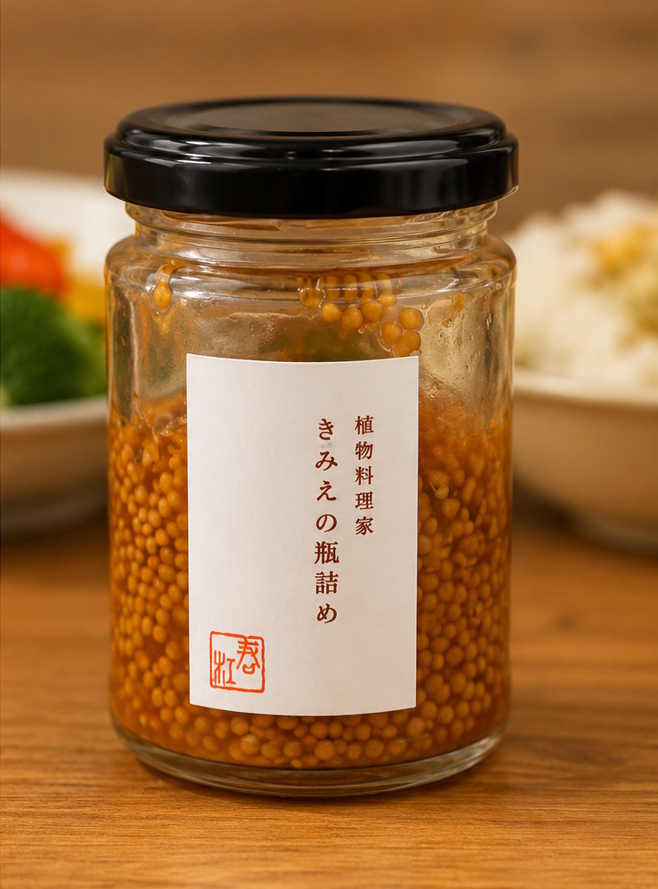

Bright · Tangy · Textured
Whole-Grain Mustard
A lively spoonful for roasted vegetables, dressings, and your favorite sandwiches.
$13 / 200 gExplore mustard ↗
Ingredients & dietary details
Current ingredient list includes mustard seeds, vinegar, olive oil, honey, soy sauce, salt, black pepper, and sugar. Final label and allergen details need confirmation.